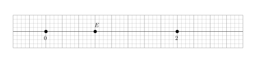
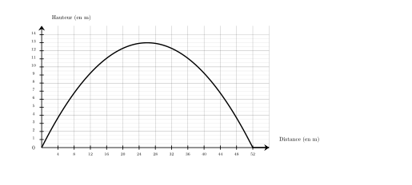

Dans une association, $40\%$ des 400 membres participent à une campagne de vaccination.
Combien de membres ne participent pas à cette campagne ?
Le nombre de membres participant à cette campagne est égal à :
$400 \times \dfrac{40}{100} = 160$.
Le nombre de membres ne participant pas à cette campagne est donc égal à :
$400 - 160 = {\color{#8B3C52}\boldsymbol{240}}$.
Une autre méthode consiste à calculer le pourcentage de membres ne participant pas à cette campagne, qui est égal à $100\% - 40\% = 60\%$.
Le nombre de membres ne participant pas à cette campagne est donc égal à :
$400 \times \dfrac{60}{100} = {\color{#8B3C52}\boldsymbol{240}}$.
02
Question
Sur chaque droite graduée, déterminer l’abscisse du point $E$. A. $\dfrac{1}{4}$
B. $\dfrac{3}{2}$
C. $\dfrac{3}{4}$
D. $\dfrac{1}{2}$

On remarque qu'il y a 8 divisions entre $0$ et $2$, donc chaque division vaut $\dfrac{1}{4}$.
Le point $E$ est situé après $3$ divisions à partir de l'origine.
Donc l'abscisse de $E$ est $\dfrac{3}{4}$.
Bonne réponse : C.
Sur cette figure, calculer la valeur exacte de $FH$.
On utilise le théorème de Pythagore dans le triangle $FGH$, rectangle en $G$.
On obtient :
$\begin{aligned}
FG^2+GH^2&=FH^2\\
FH^2&=GH^2+FG^2\\
FH^2&=4^2+5^2\\
FH^2&=16+25\\
FH^2&=41\\
FH&={\color{#8B3C52}\boldsymbol{\sqrt{41}}}
\end{aligned}$
Mentalement :
La longueur $FH$ est donnée par la racine carrée de la somme des carrés de $4$ et de $5$.
Cette somme vaut $16+25=41$.
La valeur cherchée est donc : $\sqrt{41}$.
Teresa doit acheter du gazon. Sur la notice, il est indiqué de prévoir $10$ kg pour $50\text{ m}^2$. Combien doit-elle en acheter pour une surface de $250\text{ m}^2$ ?
Commençons par trouver combien de kg il faut prévoir pour $1\text{ m}^2$.
$1\text{ m}^2$, c'est ${\color{#C5607A}\boldsymbol{50}}$ fois moins que 50$\text{ m}^2$. $10$ kg $\div {\color{#C5607A}\boldsymbol{50}} = 0{,}2$ kg on a donc besoin de ${\color{#C5607A}\boldsymbol{0{,}2}}$ kg pour recouvrir $1\text{ m}^2$. Cherchons maintenant la quantité de kg nécessaire pour recouvrir $250\text{ m}^2$. $250\text{ m}^2$, c'est ${\color{#C5607A}\boldsymbol{250}}$ fois plus que $1\text{ m}^2$. ${\color{#C5607A}\boldsymbol{0{,}2}}$ kg $\times {\color{#C5607A}\boldsymbol{250}} = 50$ kg Teresa aura besoin de ${\color{#8B3C52}\boldsymbol{50}}$ kg pour recouvrir $250\text{ m}^2$.
03
Question
Calculer le volume d'une pyramide de hauteur $6\text{ m}$ et dont la base est un triangle. La base du triangle mesure $6\text{ m}$ et la hauteur associée à cette base mesure $4\text{ m}$.
Sur la figure ci-dessus, dans le triangle $TMV$, les droites $(MV)$ et $(KO)$ sont parallèles. Déterminer la longueur $TM$.
Dans le triangle $TMV$, les droites $(MV)$ et $(KO)$ sont parallèles.
D'après le théorème de Thalès, on a :
$\dfrac{TM}{TO} =
\dfrac{MV}{KO}$.
En remplaçant par les longueurs, on obtient :
$\dfrac{TM}{TO} = \dfrac{21}{10}=2{,}1$.
On en déduit que :
$TM = 2{,}1 \times 30 = {\color{#8B3C52}\boldsymbol{63}}$ cm.
01
Question
Compléter le tableau en mettant oui ou non dans chaque case. $$\begin{array}{|l|c|c|c|c|}
\hline
\text{... est divisible} & \text{par }2 & \text{par }3 & \text{par }5 & \text{par }9\\
\hline
65 & & & & \\
\hline
\end{array}$$
On a représenté ci-dessous la trajectoire d'un projectile lancé depuis le sol.
À l'aide de ce graphique, répondre aux questions suivantes :
$\mathbf{a)}$ À quelle distance le projectile est-il retombé au sol ?
$\mathbf{b)}$ Quelle est la hauteur maximale atteinte par le projectile ?

T
$\mathbf{a)}$ Le projectile retombe au sol à une distance de ${\color{#8B3C52}\boldsymbol{52\,\mathbf{m}}}$, car la courbe passe par le point de coordonnées $(52 ;0)$.
$\mathbf{b)}$ Le point le plus haut de la courbe a pour abscisse $26$ et pour ordonnée $13$ donc la hauteur maximale est de ${\color{#8B3C52}\boldsymbol{13\,\mathbf{m}}}$.
03
Question
$1$ $\ldots$ = $60$ secondes
$1$ minute = $60$ secondes
04
Question
Dans le triangle $MNO$ rectangle en $M$, $NO=15\text{ m}$ et $\widehat{MNO}=50^\circ$. Calculer $MN$ à $0,1\text{ m}$ près.
Dans le triangle $MNO$ rectangle en $M$, le cosinus de l'angle $\widehat{MNO}$ est défini par : $\cos\left(\widehat{MNO}\right)=\dfrac{MN}{NO}$. Avec les données numériques : $\dfrac{\cos\left(50^\circ\right)}{\color{red}{1}}=\dfrac{MN}{15}$ $MN=15 \times \cos\left(50^\circ\right)$ soit $MN\approx{\color{#8B3C52}\boldsymbol{9{,}6}}\text{ m}$.